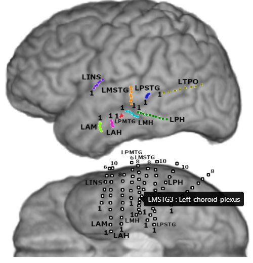

General¶
Data folder structure¶
data
PY#
data
info
- reconstruction.jpg
- reconstruction.nii
- channels.json
- brain.glb
- electrodes.glb
- anatomicalLabels.tsv
Info¶
Channels.json¶
{
"elec1": { "u": 0.439, "v": 0.111 },
"elec2": { "u": 0.436, "v": 0.136 },
"elec3": { "u": 0.438, "v": 0.161 },
"elec4": { "u": 0.435, "v": 0.192 },
}
anatomicalLabels.tsv¶
| name | x | y | z | Label |
|---|---|---|---|---|
| elec’1 | 144.678 | 154.419 | 129.642 | Left-Hippocampus |
| elec’2 | 149.758 | 154.419 | 129.674 | wm-lh-inferiortemporal |
| elec’3 | 154.790 | 154.419 | 129.696 | Left-Thalamus-Proper |
| elec’4 | 159.366 | 154.419 | 129.712 | ctx-lh-precentral |
reconstruction.jpg¶
using info/reconstruction.jpg, info/channels.json, info/anatomicalLabels.tsv

{kind=link}
Reconstruction pipeline¶
For more information on how to complete your own reconstruction (both 2D and 3D) see: Recon pipeline
Dependencies:
- Matlab
- Fieltrip
- SPM12
- Freesurfer (at least the matlab tools for Fieltrip to use)
- Docker (this is all you need for the 3D reconstruction and visualization)